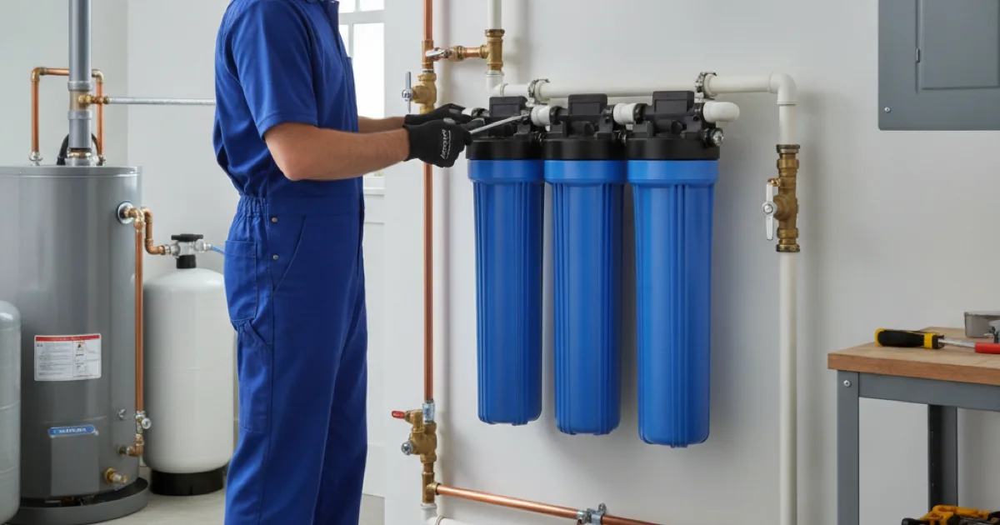

Water Filtration System Installation in Westchester County, NY
Cleaner, better-tasting water at every tap. Dan's Drains installs home water filtration systems sized to your household, so you know exactly what you are drinking.
- Licensed & Insured
- Same-Day Service Available
- Upfront Pricing
- 15+ Years Local Experience

Need a plumber in Westchester County? We can usually help the same day.
Why Install a Filtration System
Filtration improves the taste, smell, and clarity of your water and can reduce specific contaminants depending on the system. For families on well water, it adds peace of mind about what comes out of the tap.
The right system depends on what is actually in your water, which is why we start with what you are trying to solve rather than selling a one-size box.
Types of Filtration Systems
Options range from whole-home filters that treat every tap to point-of-use filters at the kitchen sink. Some target taste and odor; others tackle specific contaminants.
If your water is also hard, filtration works well alongside a softener that removes hardness minerals, since the two solve different problems.
Talk to a local Westchester County plumber today.
How We Install Filtration
We install the system where it will do the most good — on the main line for whole-home coverage, or at a specific fixture for point-of-use. We connect it cleanly, test it, and show you how to change filters.
Sizing matters here too, so the system keeps up with your household without slowing your water pressure.
Water Quality in Westchester Homes
Water quality varies a lot across the county, especially between municipal supply and private wells. Testing your water is the honest first step, so the system you install actually targets what is in it.
The EPA's private well resources explain what to test for, and we handle the filtration that addresses the results.
When to Call a Pro
Call us when your water tastes or smells off, when a well test flags something, or when you simply want cleaner water at the tap. We will help you choose a system that fits the problem.
If low pressure is also bothering you, we can check that at the same time with our water pressure diagnosis.
Frequently Asked Questions
Whole-home or under-sink filter — which do I need?
It depends on your goal. Whole-home systems treat every tap; under-sink filters focus on drinking water at the kitchen. We help you match the system to what you want to solve.
Should I test my water first?
Yes, especially on a well. Testing tells us what is actually in your water so the filter targets the right thing instead of guessing.
Will a filter reduce my water pressure?
A properly sized system should not noticeably slow your water. We size it to your household so pressure stays comfortable.
How often do filters need changing?
It varies by system and water quality. We show you the schedule for your specific unit when we install it.
Is filtration the same as softening?
No. Softening removes hardness minerals; filtration targets taste, odor, and contaminants. Many homes benefit from both, and they work well together.
Ready to book? Reach Dan’s Drains for fast, upfront plumbing help.